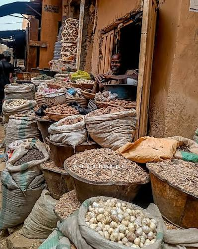
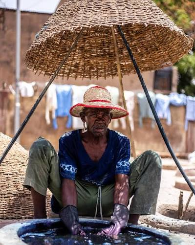
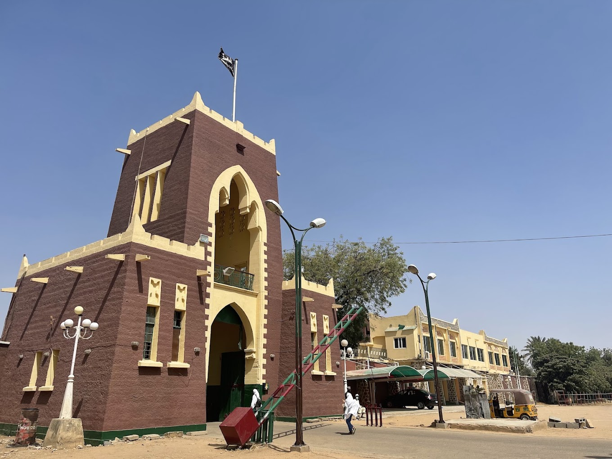

Sannu da Zuwa
Home to me all my life, rooted in heritage, and driven by its people—your window into Kano.

Founded in the 1400s, this bustling maze of leatherwork, handwoven fabrics, and local treasures is the historic heartbeat of Kano’s trade.

Dating back to 1498, these iconic open-air pits showcase the enduring artistry of Kano’s world-famous indigo textiles.

Discover centuries of royal heritage and stunning traditional Hausa architecture at two of Kano’s grandest landmarks.
Home to me all my life, rooted in heritage, and driven by its people—your window into Kano.